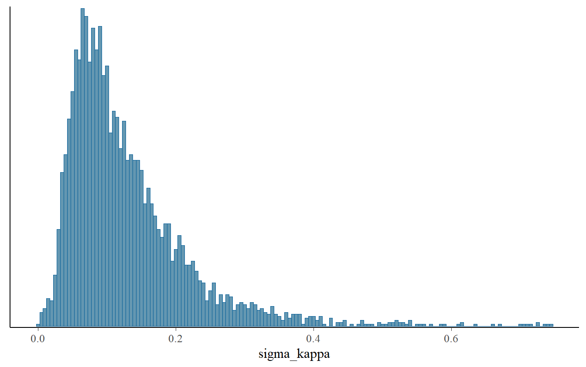
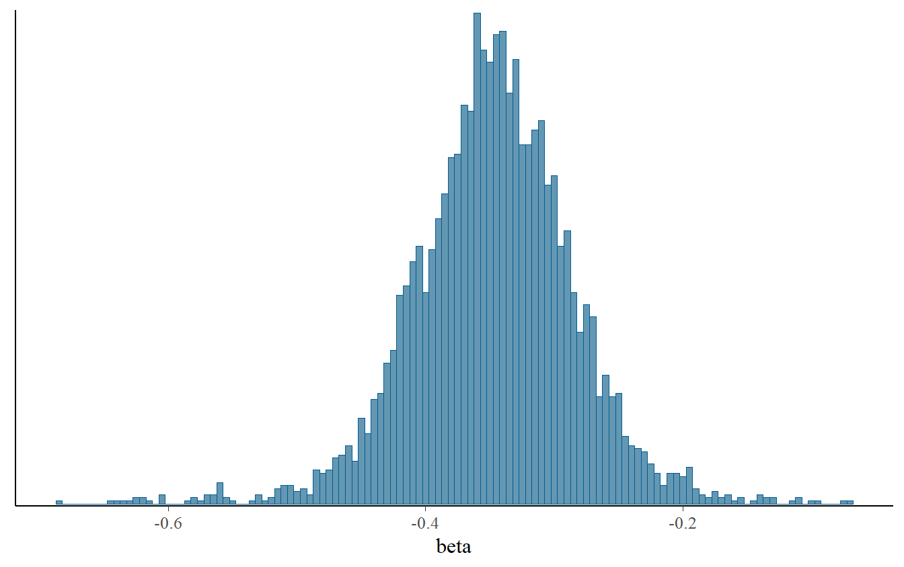
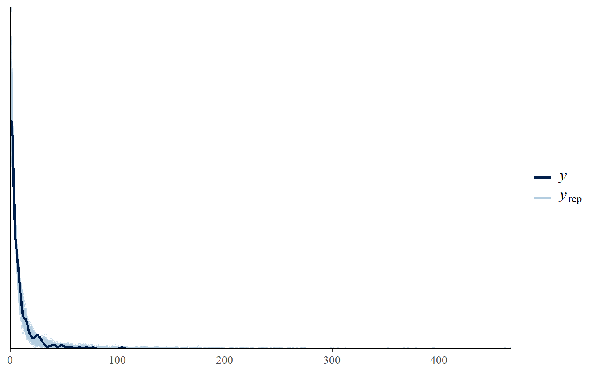
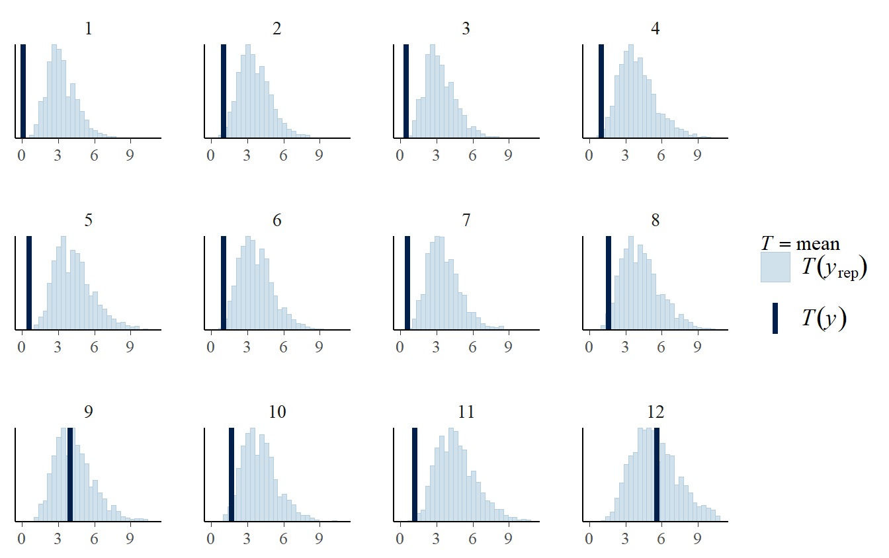
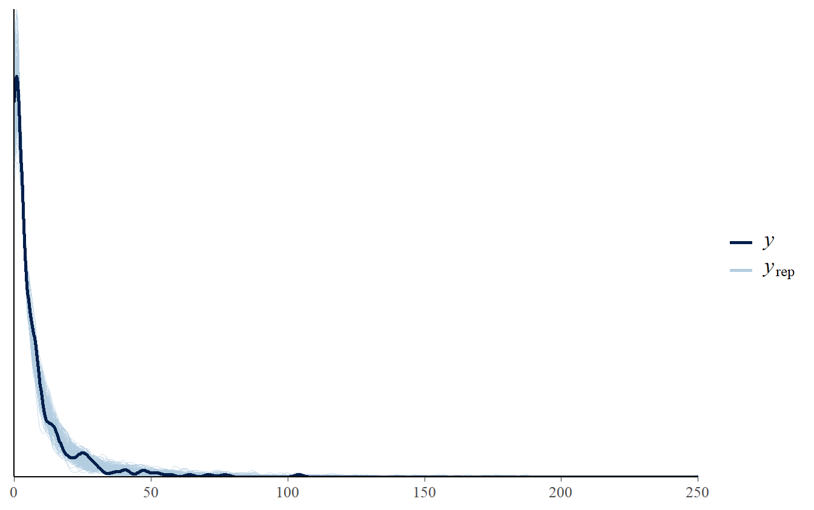
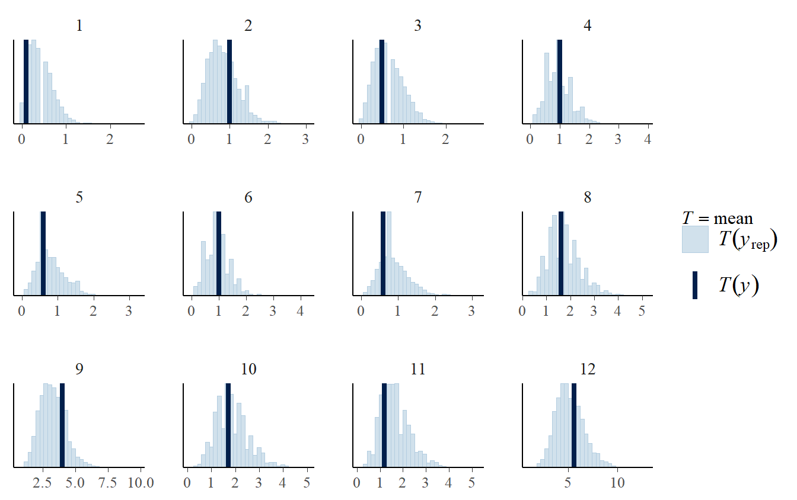
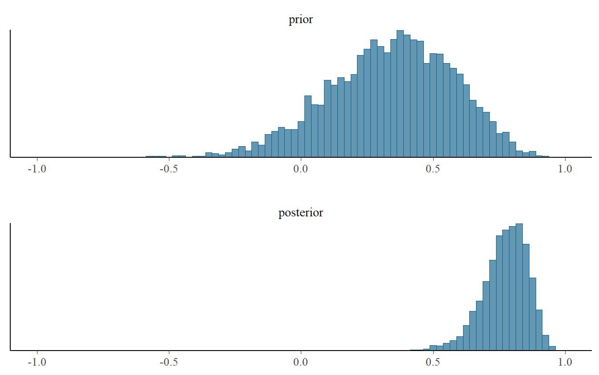
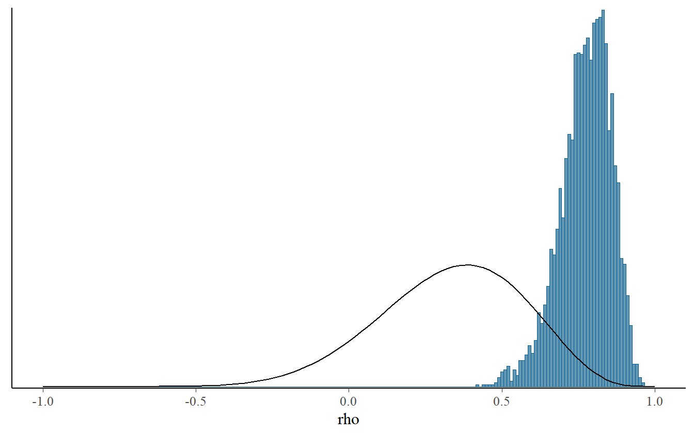
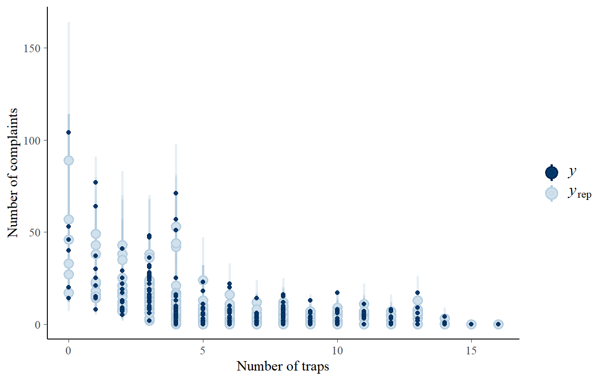
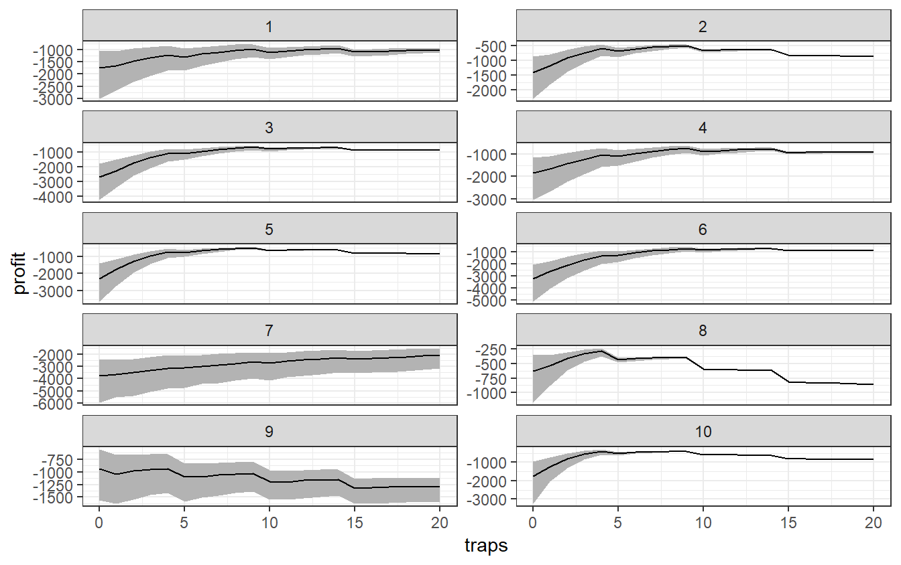

Day 4 Hierarchical/Multilevel modeling (part 2)
4.1 Varying intercept and varying slopes
We retrieved more data and thus we have more number of time points for each buildings we are considering. We can then add complexity to our model allowing for varying slopes (different effect of the number of traps for each building). The model with varying intercepts can be formalize as follows:
\[ \text{complaints}_{b,t} \sim \text{Neg-Binomial}(\lambda_{b,t}, \phi) \\ \lambda_{b,t} = \exp{(\eta_{b,t})}\\ \eta_{b,t} = \mu_b + \kappa_b \, \texttt{traps}_{b,t} + \text{log_sq_foot}_b \\ \mu_b \sim \text{Normal}(\alpha + \texttt{building_data} \, \zeta, \sigma_{\mu}) \\ \kappa_b \sim \text{Normal}(\beta + \texttt{building_data} \, \gamma, \sigma_{\kappa}) \]
Now let’s load the new dataset.
pest_data_longer <- readRDS(
here::here(
"data/pest_data_longer_stan_dat.RDS"
)
)We will fit the non-centered parametrization version of the model with varying intercepts and slopes with. Here the code of the Stan program
// Hierarchical NB model with varying intercepts and slopes
functions {
/*
* Alternative to neg_binomial_2_log_rng() that
* avoids potential numerical problems during warmup
*/
int neg_binomial_2_log_safe_rng(real eta, real phi) {
real gamma_rate = gamma_rng(phi, phi / exp(eta));
if (gamma_rate >= exp(20.79))
return -9;
return poisson_rng(gamma_rate);
}
}
data {
int<lower=1> N; // number of observations
int<lower=0> complaints[N]; // number of complaints
vector<lower=0>[N] traps; // number of traps
vector[N] log_sq_foot; // vector of exposure (offset)
// building-level data
int<lower=1> K; // number of building-level covs
int<lower=1> J; // number of building
int<lower=1, upper=J> building_idx[N];// id of the building
matrix[J,K] building_data; // building-level matrix
}
parameters {
real<lower=0> inv_phi; // inverse of the parameter phi
// Non centered parameters for varying intercepts
vector[J] mu_raw; // auxiliary parameter
real<lower=0> sigma_mu; // sd of buildings-specific intercepts
real alpha; // 'global' intercept for buildings
vector[K] zeta; // coefficients on building-level predictors
// Non centered parameters for varying slopes
vector[J] kappa_raw; // auxiliary parameter
real<lower=0> sigma_kappa; // sd of buildings-specific slopes
real beta; // 'global' slope on traps variable
vector[K] gamma; // coefficients on building-level predictors
}
transformed parameters {
real phi = inv(inv_phi); // original parameter phi
// Original parameters mu and kappa
vector[J] mu = alpha +
building_data * zeta +
sigma_mu * mu_raw;
vector[J] kappa = beta +
building_data * gamma +
sigma_kappa * kappa_raw;
}
model {
// Declare linear predictor Linear predictor
vector[N] eta = mu[building_idx] +
kappa[building_idx] .* traps +
log_sq_foot;
// Prior on inv_phi
target += normal_lpdf(inv_phi | 0, 1) +
// Prior on varying slopes parameters
normal_lpdf(kappa_raw | 0, 1) +
normal_lpdf(sigma_kappa | 0, 1) +
normal_lpdf(beta | -0.25, 1) +
normal_lpdf(gamma | 0, 1) +
// Prior on varying intercepts parameters
normal_lpdf(mu_raw | 0, 1) +
normal_lpdf(sigma_mu | 0, 1) +
normal_lpdf(alpha | log(4), 1) +
normal_lpdf(zeta | 0, 1);
// Likelihood
target += neg_binomial_2_log_lpmf(complaints | eta, phi);
// The symbol ".*" is element-wise multiplication to multiply
// the slope of each building for the number of traps of that building
}
generated quantities {
// Declare replicated data
int y_rep[N];
for (n in 1:N) {
real eta_n = mu[building_idx[n]] +
kappa[building_idx[n]] * traps[n] +
log_sq_foot[n];
y_rep[n] = neg_binomial_2_log_safe_rng(eta_n, phi);
}
}Fit the model to data and extract the posterior draws needed for our posterior predictive checks.
# Compile the model
comp_model_NB_hier_slopes <- stan_model(
'stan_programs/hier_multiple_neg_bin_ncp_var_slopes.stan'
)
# Sampling from the posterior
fitted_model_NB_hier_slopes <- sampling(
comp_model_NB_hier_slopes,
data = pest_data_longer,
warmup = 1000L,
iter = 2000L,
chains = 4,
control = list(
adapt_delta = 0.99, # Increase the step of the chains
max_treedepth = 15
),
seed = mcmc_seed
)To see if the model infers building-to-building differences in, we can plot a histogram of our marginal posterior distribution for sigma_kappa.
mcmc_hist(
as.matrix(
fitted_model_NB_hier_slopes,
pars = "sigma_kappa"
),
binwidth = 0.005
)
print(
fitted_model_NB_hier_slopes,
pars = c('kappa','beta','alpha','phi','sigma_mu','sigma_kappa','mu')
)#> Inference for Stan model: hier_multiple_neg_bin_ncp_var_slopes.
#> 4 chains, each with iter=2000; warmup=1000; thin=1;
#> post-warmup draws per chain=1000, total post-warmup draws=4000.
#>
#> mean se_mean sd 2.5% 25% 50% 75% 97.5% n_eff Rhat
#> kappa[1] -0.02 0.00 0.08 -0.14 -0.07 -0.03 0.03 0.16 1273 1.00
#> kappa[2] -0.42 0.00 0.10 -0.64 -0.48 -0.41 -0.35 -0.24 2034 1.00
#> kappa[3] -0.59 0.00 0.10 -0.79 -0.65 -0.58 -0.52 -0.39 4000 1.00
#> kappa[4] -0.22 0.00 0.07 -0.37 -0.26 -0.22 -0.18 -0.08 4000 1.00
#> kappa[5] -0.60 0.00 0.09 -0.78 -0.66 -0.60 -0.54 -0.42 4000 1.00
#> kappa[6] -0.44 0.00 0.11 -0.67 -0.50 -0.43 -0.37 -0.24 4000 1.00
#> kappa[7] -0.31 0.00 0.07 -0.44 -0.36 -0.31 -0.26 -0.18 4000 1.00
#> kappa[8] -0.23 0.00 0.15 -0.56 -0.33 -0.23 -0.13 0.05 4000 1.00
#> kappa[9] 0.08 0.00 0.06 -0.03 0.04 0.08 0.12 0.20 4000 1.00
#> kappa[10] -0.72 0.00 0.16 -1.02 -0.83 -0.73 -0.63 -0.39 1711 1.00
#> beta -0.35 0.00 0.06 -0.47 -0.38 -0.35 -0.31 -0.23 2999 1.00
#> alpha 1.41 0.01 0.32 0.77 1.21 1.41 1.62 2.01 2841 1.00
#> phi 1.61 0.00 0.19 1.27 1.48 1.60 1.73 2.03 4000 1.00
#> sigma_mu 0.50 0.02 0.40 0.02 0.18 0.40 0.73 1.48 601 1.01
#> sigma_kappa 0.13 0.00 0.09 0.03 0.07 0.11 0.16 0.37 643 1.01
#> mu[1] 0.27 0.02 0.73 -1.44 -0.10 0.37 0.76 1.46 1273 1.00
#> mu[2] 1.66 0.01 0.54 0.71 1.28 1.62 1.99 2.85 1972 1.00
#> mu[3] 2.13 0.01 0.32 1.51 1.91 2.12 2.34 2.78 4000 1.00
#> mu[4] 1.48 0.01 0.52 0.44 1.15 1.48 1.80 2.57 4000 1.00
#> mu[5] 2.40 0.01 0.42 1.60 2.11 2.39 2.68 3.21 4000 1.00
#> mu[6] 1.91 0.01 0.40 1.21 1.65 1.88 2.13 2.82 4000 1.00
#> mu[7] 2.68 0.00 0.26 2.19 2.50 2.68 2.85 3.20 4000 1.00
#> mu[8] -0.50 0.02 0.97 -2.31 -1.13 -0.53 0.08 1.60 4000 1.00
#> mu[9] 0.21 0.01 0.58 -0.96 -0.17 0.21 0.59 1.34 4000 1.00
#> mu[10] 1.83 0.03 1.10 -0.66 1.21 1.97 2.58 3.63 1289 1.00
#>
#> Samples were drawn using NUTS(diag_e) at Mon Sep 17 20:18:00 2018.
#> For each parameter, n_eff is a crude measure of effective sample size,
#> and Rhat is the potential scale reduction factor on split chains (at
#> convergence, Rhat=1).mcmc_hist(
as.matrix(
fitted_model_NB_hier_slopes,
pars = "beta"
),
binwidth = 0.005
)
While the model can’t specifically rule out zero from the posterior, it does have mass at small non-zero numbers, so we should leave in the hierarchy over \(\texttt{kappa}\). Plotting the marginal data density again, we can see the model still looks well calibrated.
y_rep <- as.matrix(
fitted_model_NB_hier_slopes,
pars = "y_rep"
)
ppc_dens_overlay(
y = pest_data_longer$complaints,
yrep = y_rep[1:200,]
)
4.2 Time varying effects and structured priors
We haven’t still inspect the trend of complaints over the time. We can check if there is any pattern by comparing the observed and posterior predictive average number of complaints over different months of the year.
select_vec <- which(pest_data_longer$mo_idx %in% 1:12)
ppc_stat_grouped(
y = pest_data_longer$complaints[select_vec],
yrep = y_rep[,select_vec],
group = pest_data_longer$mo_idx[select_vec],
stat = 'mean'
) +
xlim(0, 11)
Looking at the plot above, it seems that the average number of complaints increases over the time. Our model was not able to capture this feature of the data and it tend to overestimate the average number of complaints for many months of the year.
We can increase complexity in our model by adding a log-additive monthly effect to capture trend over time with an Autoregressive (AR) model. We add into our model the term \(\texttt{mo}_t\),
\[ \eta_{b,t} = \mu_b + \kappa_b \, \texttt{traps}_{b,t} + \texttt{mo}_t + \text{log_sq_foot}_b \]
The change in the number of complaints over the time can be influenced by several factors. It is possible that more roaches are present during the summer as well as there is more roach control in the same season. It is plausible to think that maybe residents are more vigilant after the first sighting of roaches in the building, leading to an increase in the number of complaints.
This can be a motivation for using an autoregressive prior for our monthly effects. With such model we are evaluating the possibility that the number of complaints in a month is related to the number of complaints in the previous month. The model s as follows:
\[ \texttt{mo}_t \sim \text{Normal}(\rho \, \texttt{mo}_{t-1}, \sigma_\texttt{mo}) \\ \equiv \\ \texttt{mo}_t = \rho \, \texttt{mo}_{t-1} +\epsilon_t , \quad \epsilon_t \sim \text{Normal}(0, \sigma_\texttt{mo}) \\ \quad \rho \in [-1,1] \]
This equation says that the monthly effect in month \(t\) is directly related to the last month’s monthly effect. Given the description of the process above, it seems like there could be either positive or negative associations between the months, but there should be a bit more weight placed on positive \(\rho\)s, so we’ll put an informative prior that pushes the parameter \(\rho\) towards 0.5.
Because Stan doesn’t implement any densities that have support on \([-1,1]\), we must use a variable transformation of a raw variable defined on \([0,1]\) before having the density on \(\rho\) in \([-1,1]\), that is:
\[ \rho_{\text{raw}} \in [0, 1] \\ \rho = 2 \times \rho_{\text{raw}} - 1 \]
In such a way, we can put a prior on \(\rho_{raw}\) that pushes the estimate of \(\rho\) toward \(0.5\).
Since we are working in a situation where the distribution of \(mo_{t}\) is conditional on \(mo_{t-1}\), the prior on \(mo_{t}\) should follow the same logic. But what kind of prior should we use for the first month, i.e. \(mo_{1}\)?
For this first observation we need to find its marginal distribution. We can exploit the stationary nature of AR model, that says that for all \(t\):
\[ E \left( mo_{t} \right) = E \left( mo_{t -1 } \right) \\ Var \left( mo_{t} \right) = Var \left( mo_{t -1 } \right) \]
Hence, the marginal distribution of \(mo_{t}\) will be equal to the marginal distribution of \(m_{t - 1}\).
First we derive the marginal variance of \(\texttt{mo}_{t}\).
\[ \text{Var}(\texttt{mo}_t) = \text{Var}(\rho \texttt{mo}_{t-1} + \epsilon_t) \\ \text{Var}(\texttt{mo}_t) = \text{Var}(\rho \texttt{mo}_{t-1}) + \text{Var}(\epsilon_t) \]
The equality in the second line holds because of the independece between of \(\epsilon_t\) and \(\epsilon_{t-1})\).
Then, using the fact that \(Var(cX) = c^2Var(X)\) for a constant \(c\) and that, by stationarity, \(\textrm{Var}(\texttt{mo}_{t-1}) = \textrm{Var}(\texttt{mo}_{t})\), we get:
\[ \text{Var}(\texttt{mo}_t)= \rho^2 \text{Var}( \texttt{mo}_{t}) + \sigma_\texttt{mo}^2 \\ \text{Var}(\texttt{mo}_t) = \frac{\sigma_\texttt{mo}^2}{1 - \rho^2} \]
For the mean of \(\texttt{mo}_t\):
\[ \mathbb{E}(\texttt{mo}_t) = \mathbb{E}(\rho \, \texttt{mo}_{t-1} + \epsilon_t) \\ \mathbb{E}(\texttt{mo}_t) = \mathbb{E}(\rho \, \texttt{mo}_{t-1}) + \mathbb{E}(\epsilon_t) \\ \]
Since \(\mathbb{E}(\epsilon_t) = 0\) by assumption we have
\[ \mathbb{E}(\texttt{mo}_t) = \mathbb{E}(\rho \, \texttt{mo}_{t-1}) + 0\\ \mathbb{E}(\texttt{mo}_t) = \rho \, \mathbb{E}(\texttt{mo}_{t}) \\ \mathbb{E}(\texttt{mo}_t) - \rho \mathbb{E}(\texttt{mo}_t) = 0 \\ \mathbb{E}(\texttt{mo}_t) = 0/(1 - \rho) \]
which for \(\rho \neq 1\) yields \(\mathbb{E}(\texttt{mo}_{t}) = 0\).
We thus get the marginal distribution for \(\texttt{mo}_{t}\), which we will use for \(\texttt{mo}_1\). The AR model for \(mo_{1}\) can be specified as follows:
\[ \texttt{mo}_1 \sim \text{Normal}\left(0, \frac{\sigma_\texttt{mo}}{\sqrt{1 - \rho^2}}\right) \]
Thus, the prior will have the following distribution:
\[ \texttt{mo}_t \sim \text{Normal}\left(\rho \, \texttt{mo}_{t-1}, \sigma_\texttt{mo}\right) \forall t > 1 \]
The Stan program of the last model is coded as follows:
// Hierarchical NB model with varying intercepts and slopes and
// month effect
functions {
/*
* Alternative to neg_binomial_2_log_rng() that
* avoids potential numerical problems during warmup
*/
int neg_binomial_2_log_safe_rng(real eta, real phi) {
real gamma_rate = gamma_rng(phi, phi / exp(eta));
if (gamma_rate >= exp(20.79))
return -9;
return poisson_rng(gamma_rate);
}
}
data {
int<lower = 1> N;
int<lower = 0> complaints[N];
vector<lower = 0>[N] traps;
// 'exposure'
vector[N] log_sq_foot;
// building-level data
int<lower = 1> K;
int<lower = 1> J;
int<lower = 1, upper = J> building_idx[N];
matrix[J,K] building_data;
// month info
int<lower = 1> M;
int<lower = 1, upper = M> mo_idx[N];
}
parameters {
real<lower = 0> inv_phi; // 1/phi (easier to think about prior for 1/phi instead of phi)
// Varying intercept for the buildings
vector[J] mu_raw; // N(0,1) params for non-centered param of building-specific intercepts
real<lower = 0> sigma_mu; // sd of buildings-specific intercepts
real alpha; // 'global' intercept
vector[K] zeta; // coefficients on building-level predictors in model for mu
// Varying slopes for the buildings
vector[J] kappa_raw; // N(0,1) params for non-centered param of building-specific slopes
real<lower = 0> sigma_kappa; // sd of buildings-specific slopes
real beta; // 'global' slope on traps variable
vector[K] gamma; // coefficients on building-level predictors in model for kappa
// month-specific parameters
real<lower = 0,upper = 1> rho_raw; // used to construct rho, the AR(1) coefficient
vector[M] mo_raw;
real<lower = 0> sigma_mo;
}
transformed parameters {
real phi = inv(inv_phi);
// non-centered parameterization of building-specific intercepts and slopes
vector[J] mu = alpha + building_data * zeta + sigma_mu * mu_raw;
vector[J] kappa = beta + building_data * gamma + sigma_kappa * kappa_raw;
// AR(1) process priors
real rho = 2.0 * rho_raw - 1.0;
vector[M] mo = sigma_mo * mo_raw;
mo[1] /= sqrt(1 - rho^2); // mo[1] = mo[1]/sqrt(1-rho^2)
// loop over the rest of the mo vector to add in the dependence on previous month
for(m in 2:M) {
mo[m] += rho * mo[m - 1];
}
}
model {
// Likelihood
vector[N] eta = mu[building_idx] +
kappa[building_idx] .* traps +
mo[mo_idx] +
log_sq_foot;
target += neg_binomial_2_log_lpmf(complaints | eta, phi);
// Priors
target += normal_lpdf(inv_phi | 0, 1) +
// Priors on non-centered slopes
normal_lpdf(kappa_raw | 0, 1) +
normal_lpdf(sigma_kappa | 0, 1) +
normal_lpdf(beta | -0.25, 1) +
normal_lpdf(gamma | 0, 1) +
// Priors on non-centered intercepts
normal_lpdf(mu_raw | 0, 1) +
normal_lpdf(sigma_mu | 0, 1) +
normal_lpdf(alpha | log(4), 1) +
normal_lpdf(zeta | 0, 1) +
// Priors on non-centered months
beta_lpdf(rho_raw | 10, 5) +
normal_lpdf(mo_raw | 0, 1) +
normal_lpdf(sigma_mo | 0, 1);
// Alternative formulation
// inv_phi ~ normal(0, 1);
//
// kappa_raw ~ normal(0,1) ;
// sigma_kappa ~ normal(0, 1);
// beta ~ normal(-0.25, 1);
// gamma ~ normal(0, 1);
//
// mu_raw ~ normal(0,1) ;
// sigma_mu ~ normal(0, 1);
// alpha ~ normal(log(4), 1);
// zeta ~ normal(0, 1);
//
// rho_raw ~ beta(10, 5);
// mo_raw ~ normal(0, 1);
// sigma_mo ~ normal(0, 1);
//
// complaints ~ neg_binomial_2_log(mu[building_idx] +
// kappa[building_idx] .* traps +
// mo[mo_idx] +
// log_sq_foot,
// phi);
}
generated quantities {
int y_rep[N];
for (n in 1:N) {
real eta_n =
mu[building_idx[n]] +
kappa[building_idx[n]] * traps[n] +
mo[mo_idx[n]] +
log_sq_foot[n];
y_rep[n] = neg_binomial_2_log_safe_rng(eta_n, phi);
}
}
Let’s compile the model
comp_model_NB_hier_mos <- stan_model(
'stan_programs/hier_multiple_neg_bin_ncp_var_slopes_mon.stan'
)and run the algorithm to sample from the posterior.
fitted_model_NB_hier_mos <- sampling(
comp_model_NB_hier_mos,
data = pest_data_longer,
warmup = 1000L,
iter = 2000L,
chains = 4,
control = list(
adapt_delta = 0.95,
max_treedepth = 15
),
seed = mcmc_seed
)Now we can print the parameters of the model.
print(
fitted_model_NB_hier_mos,
pars = c(
'kappa',
'beta',
'alpha',
'phi',
'sigma_mu',
'sigma_kappa',
'mu',
"zeta",
"mo",
"sigma_mo"
)
)#> Inference for Stan model: hier_multiple_neg_bin_ncp_var_slopes_mon.
#> 4 chains, each with iter=2000; warmup=1000; thin=1;
#> post-warmup draws per chain=1000, total post-warmup draws=4000.
#>
#> mean se_mean sd 2.5% 25% 50% 75% 97.5% n_eff Rhat
#> kappa[1] -0.12 0.00 0.05 -0.22 -0.15 -0.12 -0.09 -0.04 2178 1.00
#> kappa[2] -0.28 0.00 0.07 -0.42 -0.33 -0.28 -0.24 -0.16 4000 1.00
#> kappa[3] -0.26 0.00 0.07 -0.40 -0.31 -0.26 -0.22 -0.13 4000 1.00
#> kappa[4] -0.18 0.00 0.05 -0.28 -0.22 -0.19 -0.15 -0.07 2037 1.00
#> kappa[5] -0.34 0.00 0.07 -0.47 -0.38 -0.34 -0.29 -0.19 4000 1.00
#> kappa[6] -0.25 0.00 0.06 -0.38 -0.28 -0.24 -0.20 -0.12 4000 1.00
#> kappa[7] -0.06 0.00 0.04 -0.14 -0.09 -0.06 -0.03 0.02 4000 1.00
#> kappa[8] -0.41 0.00 0.12 -0.65 -0.48 -0.40 -0.34 -0.20 2280 1.00
#> kappa[9] -0.04 0.00 0.04 -0.12 -0.07 -0.04 -0.01 0.05 4000 1.00
#> kappa[10] -0.49 0.00 0.09 -0.66 -0.54 -0.48 -0.43 -0.33 4000 1.00
#> beta -0.24 0.00 0.04 -0.34 -0.27 -0.24 -0.22 -0.16 2376 1.00
#> alpha 0.81 0.01 0.45 -0.06 0.51 0.80 1.10 1.71 1266 1.00
#> phi 8.78 0.03 1.94 5.69 7.40 8.52 9.88 13.44 4000 1.00
#> sigma_mu 0.30 0.01 0.24 0.01 0.12 0.26 0.43 0.89 1240 1.00
#> sigma_kappa 0.09 0.00 0.05 0.01 0.05 0.07 0.11 0.22 1190 1.00
#> mu[1] 0.88 0.02 0.61 -0.26 0.46 0.86 1.27 2.13 1344 1.01
#> mu[2] 0.53 0.01 0.52 -0.50 0.18 0.53 0.87 1.56 1455 1.00
#> mu[3] 0.79 0.01 0.46 -0.11 0.50 0.80 1.09 1.70 1226 1.00
#> mu[4] 0.78 0.02 0.57 -0.36 0.42 0.79 1.17 1.86 1352 1.00
#> mu[5] 0.81 0.01 0.50 -0.19 0.49 0.81 1.15 1.78 1434 1.00
#> mu[6] 0.84 0.01 0.47 -0.08 0.54 0.84 1.15 1.81 1292 1.00
#> mu[7] 1.54 0.01 0.44 0.67 1.25 1.54 1.81 2.42 1124 1.01
#> mu[8] 0.29 0.02 0.81 -1.24 -0.26 0.27 0.81 1.96 2006 1.00
#> mu[9] 1.00 0.01 0.59 -0.15 0.62 1.00 1.40 2.19 1858 1.00
#> mu[10] 0.51 0.02 0.74 -0.92 0.01 0.51 1.01 1.97 2449 1.00
#> zeta[1] -0.13 0.01 0.43 -0.99 -0.41 -0.14 0.14 0.75 2836 1.00
#> zeta[2] 0.37 0.01 0.35 -0.34 0.14 0.38 0.61 1.03 2595 1.00
#> zeta[3] 0.08 0.01 0.50 -0.95 -0.24 0.08 0.41 1.07 3242 1.00
#> zeta[4] -0.23 0.01 0.33 -0.87 -0.46 -0.24 -0.01 0.46 2816 1.00
#> mo[1] -2.23 0.02 0.59 -3.51 -2.60 -2.20 -1.84 -1.18 1523 1.00
#> mo[2] -1.60 0.01 0.51 -2.66 -1.93 -1.59 -1.26 -0.62 1546 1.00
#> mo[3] -1.77 0.01 0.53 -2.87 -2.11 -1.77 -1.42 -0.74 1604 1.00
#> mo[4] -1.45 0.01 0.50 -2.48 -1.77 -1.45 -1.13 -0.46 1472 1.00
#> mo[5] -1.68 0.01 0.52 -2.72 -2.02 -1.67 -1.33 -0.68 1602 1.00
#> mo[6] -1.43 0.01 0.50 -2.46 -1.75 -1.43 -1.10 -0.46 1418 1.00
#> mo[7] -1.55 0.01 0.53 -2.62 -1.89 -1.54 -1.21 -0.56 1361 1.00
#> mo[8] -0.89 0.01 0.49 -1.89 -1.20 -0.89 -0.58 0.05 1363 1.00
#> mo[9] -0.27 0.01 0.46 -1.19 -0.57 -0.26 0.03 0.60 1320 1.00
#> mo[10] -0.79 0.01 0.48 -1.75 -1.10 -0.78 -0.47 0.14 1296 1.00
#> mo[11] -0.96 0.01 0.49 -1.97 -1.28 -0.94 -0.64 -0.03 1305 1.00
#> mo[12] 0.13 0.01 0.46 -0.79 -0.15 0.14 0.43 1.01 1261 1.01
#> mo[13] 0.45 0.01 0.45 -0.47 0.16 0.46 0.73 1.30 1206 1.01
#> mo[14] 0.96 0.01 0.44 0.06 0.68 0.97 1.25 1.82 1205 1.01
#> mo[15] -0.06 0.01 0.46 -1.00 -0.34 -0.05 0.23 0.84 1217 1.01
#> mo[16] 0.22 0.01 0.45 -0.69 -0.06 0.22 0.52 1.10 1205 1.00
#> mo[17] 0.32 0.01 0.45 -0.62 0.03 0.32 0.60 1.20 1198 1.00
#> mo[18] 0.14 0.01 0.46 -0.76 -0.16 0.14 0.44 1.01 1200 1.00
#> mo[19] 0.64 0.01 0.44 -0.26 0.36 0.64 0.94 1.50 1165 1.01
#> mo[20] 0.33 0.01 0.45 -0.58 0.04 0.33 0.62 1.21 1197 1.00
#> mo[21] 0.78 0.01 0.45 -0.14 0.49 0.78 1.06 1.64 1183 1.01
#> mo[22] 1.20 0.01 0.44 0.33 0.92 1.20 1.48 2.07 1186 1.01
#> mo[23] 0.99 0.01 0.44 0.12 0.71 0.99 1.27 1.83 1191 1.01
#> mo[24] 0.74 0.01 0.45 -0.16 0.46 0.75 1.03 1.61 1173 1.01
#> mo[25] 0.67 0.01 0.45 -0.22 0.38 0.68 0.97 1.54 1213 1.00
#> mo[26] 0.81 0.01 0.44 -0.09 0.53 0.81 1.09 1.69 1216 1.00
#> mo[27] 0.87 0.01 0.45 -0.03 0.59 0.88 1.15 1.75 1216 1.00
#> mo[28] 0.94 0.01 0.44 0.03 0.66 0.94 1.23 1.80 1225 1.00
#> mo[29] 0.15 0.01 0.46 -0.77 -0.14 0.16 0.45 1.06 1250 1.00
#> mo[30] 0.17 0.01 0.46 -0.76 -0.12 0.17 0.48 1.07 1191 1.00
#> mo[31] 0.81 0.01 0.45 -0.07 0.53 0.82 1.09 1.67 1194 1.00
#> mo[32] 1.03 0.01 0.45 0.12 0.75 1.03 1.30 1.90 1155 1.01
#> mo[33] 1.45 0.01 0.44 0.57 1.17 1.45 1.73 2.34 1162 1.01
#> mo[34] 0.47 0.01 0.45 -0.46 0.20 0.48 0.76 1.36 1221 1.00
#> mo[35] 0.26 0.01 0.46 -0.66 -0.03 0.26 0.55 1.16 1192 1.01
#> mo[36] 0.66 0.01 0.45 -0.23 0.37 0.66 0.95 1.54 1177 1.01
#> sigma_mo 0.58 0.00 0.10 0.42 0.51 0.57 0.64 0.80 1009 1.00
#>
#> Samples were drawn using NUTS(diag_e) at Mon Sep 17 20:20:47 2018.
#> For each parameter, n_eff is a crude measure of effective sample size,
#> and Rhat is the potential scale reduction factor on split chains (at
#> convergence, Rhat=1).In the interest of brevity, we won’t go on expanding the model, though we certainly could. What other information would help us understand the data generating process better? What other aspects of the data generating process might we want to capture that we’re not capturing now?
As usual, we run through our posterior predictive checks.
y_rep <- as.matrix(
fitted_model_NB_hier_mos,
pars = "y_rep"
)
ppc_dens_overlay(
y = pest_data_longer$complaints,
yrep = y_rep[1:200,]
)
select_vec <- which(pest_data_longer$mo_idx %in% 1:12)
ppc_stat_grouped(
y = pest_data_longer$complaints[select_vec],
yrep = y_rep[,select_vec],
group = pest_data_longer$mo_idx[select_vec],
stat = 'mean'
)
As we can see, our monthly varying intercept has captured a monthly pattern across all the buildings. We can also compare the prior and posterior for the autoregressive parameter to see how much we’ve learned. Here are two different ways of comparing the prior and posterior visually:
# 1) compare draws from prior and draws from posterior
rho_draws <- cbind(
2 * rbeta(4000, 10, 5) - 1, # draw from prior
as.matrix(
fitted_model_NB_hier_mos,
pars = "rho"
)
)
colnames(rho_draws) <- c("prior", "posterior")
mcmc_hist(
rho_draws,
freq = FALSE,
binwidth = 0.025,
facet_args = list(nrow = 2)
) +
xlim(-1, 1)
# 2) overlay prior density curve on posterior draws
gen_rho_prior <- function(x) {
alpha <- 10; beta <- 5
a <- -1; c <- 1
lp <- (alpha - 1) * log(x - a) +
(beta - 1) * log(c - x) -
(alpha + beta - 1) * log(c - a) -
lbeta(alpha, beta)
return(exp(lp))
}
mcmc_hist(
as.matrix(
fitted_model_NB_hier_mos,
pars = "rho"
),
freq = FALSE,
binwidth = 0.01
) +
overlay_function(fun = gen_rho_prior) +
xlim(-1,1)
print(
fitted_model_NB_hier_mos,
pars = c('rho','sigma_mu','sigma_kappa','gamma')
)#> Inference for Stan model: hier_multiple_neg_bin_ncp_var_slopes_mon.
#> 4 chains, each with iter=2000; warmup=1000; thin=1;
#> post-warmup draws per chain=1000, total post-warmup draws=4000.
#>
#> mean se_mean sd 2.5% 25% 50% 75% 97.5% n_eff Rhat
#> rho 0.77 0.00 0.08 0.58 0.72 0.78 0.83 0.91 1501 1
#> sigma_mu 0.30 0.01 0.24 0.01 0.12 0.26 0.43 0.89 1240 1
#> sigma_kappa 0.09 0.00 0.05 0.01 0.05 0.07 0.11 0.22 1190 1
#> gamma[1] -0.18 0.00 0.10 -0.38 -0.25 -0.18 -0.12 0.01 1705 1
#> gamma[2] 0.12 0.00 0.07 -0.03 0.07 0.11 0.16 0.27 1663 1
#> gamma[3] 0.11 0.00 0.14 -0.17 0.02 0.10 0.19 0.39 2117 1
#> gamma[4] -0.01 0.00 0.06 -0.14 -0.04 0.00 0.04 0.12 1919 1
#>
#> Samples were drawn using NUTS(diag_e) at Mon Sep 17 20:20:47 2018.
#> For each parameter, n_eff is a crude measure of effective sample size,
#> and Rhat is the potential scale reduction factor on split chains (at
#> convergence, Rhat=1).ppc_intervals(
y = pest_data_longer$complaints,
yrep = y_rep,
x = pest_data_longer$traps
) +
labs(
x = "Number of traps",
y = "Number of complaints"
)
It looks as if our model finally generates a reasonable posterior predictive distribution for all numbers of traps, and appropriately captures the tails of the data generating process.
4.3 Use the model
We can now use our model to help the company on the decision of the optimal number of traps to put in each building. We will make predictions for \(6\) months forward.
Our revenue model needs to know how much revenue is lost due to the complaints. We know that the company for every \(10\) complaints will call an exterminator agency that will cost around 100 euros, nearly 10 euros per complaint.
We now prepare the data for our model. We need to add in list to pass to the Stan program a vector with the number of traps for which we want to evaluate the number of complaints and the lost revenue for each complaints.
# Number of hypothetical traps
N_hypo_traps <- 21L
hypo_traps <- seq(from = 0, to = 20, by = 1)
# List with data to pass to Stan
pest_data_longer[["N_hypo_traps"]] <- N_hypo_traps
pest_data_longer[["hypo_traps"]] <- hypo_traps
pest_data_longer[["lost_rev"]] <- 10The Stan program has been coded as follows:
// Predictions using hierarchical NB model with varying intercepts
// and slopes and month effect
functions {
/*
* Alternative to neg_binomial_2_log_rng() that
* avoids potential numerical problems during warmup
*/
int neg_binomial_2_log_safe_rng(real eta, real phi) {
real gamma_rate = gamma_rng(phi, phi / exp(eta));
if (gamma_rate >= exp(20.79))
return -9;
return poisson_rng(gamma_rate);
}
}
data {
int<lower = 1> N;
int<lower = 0> complaints[N];
vector<lower = 0>[N] traps;
// 'exposure'
vector[N] log_sq_foot;
// building-level data
int<lower = 1> K; // number of building-level predictors
int<lower = 1> J; // number of buildings
int<lower = 1, upper = J> building_idx[N]; // building id
matrix[J, K] building_data; // building-level matrix
// month info
int<lower = 1> M;
int<lower = 1, upper = M> mo_idx[N];
// To use in the generated quantities block
int<lower = 1> M_forward;
vector[J] log_sq_foot_pred;
// Number of traps used to predict number of complaints
int N_hypo_traps;
int hypo_traps[N_hypo_traps];
// Lost revenue for one complaint
real lost_rev;
}
parameters {
real<lower = 0> inv_phi; // inverse of phi
// Varying intercept for the buildings
vector[J] mu_raw; // auxiliary parameter
real<lower = 0> sigma_mu;// sd of buildings-specific intercepts
real alpha; // 'global' intercept
vector[K] zeta; // coefficients on building-level predictors
// Varying slopes for the buildings
vector[J] kappa_raw; // auxiliary parameter
real<lower = 0> sigma_kappa; // sd of buildings-specific slopes
real beta; // 'global' slope on traps variable
vector[K] gamma; // coefficients on building-level predictors
// month-specific parameters
real<lower = 0,upper = 1> rho_raw; // used to construct rho
vector[M] mo_raw;
real<lower = 0> sigma_mo;
}
transformed parameters {
real phi = inv(inv_phi); // original phi
// non-centered parameterization of building-specific
vector[J] mu = alpha +
building_data * zeta +
sigma_mu * mu_raw;
vector[J] kappa = beta +
building_data * gamma +
sigma_kappa * kappa_raw;
// AR(1) process priors
real rho = 2.0 * rho_raw - 1.0;
vector[M] mo = sigma_mo * mo_raw;
mo[1] /= sqrt(1 - rho^2); // mo[1] = mo[1]/sqrt(1-rho^2)
// add in the dependence on previous month
for(m in 2:M) {
mo[m] += rho * mo[m - 1];
}
}
model {
// Likelihood
vector[N] eta = mu[building_idx] +
kappa[building_idx] .* traps +
mo[mo_idx] +
log_sq_foot;
target += neg_binomial_2_log_lpmf(complaints | eta, phi);
// Priors
target += normal_lpdf(inv_phi | 0, 1) +
// Priors on non-centered slopes
normal_lpdf(kappa_raw | 0, 1) +
normal_lpdf(sigma_kappa | 0, 1) +
normal_lpdf(beta | -0.25, 1) +
normal_lpdf(gamma | 0, 1) +
// Priors on non-centered intercepts
normal_lpdf(mu_raw | 0, 1) +
normal_lpdf(sigma_mu | 0, 1) +
normal_lpdf(alpha | log(4), 1) +
normal_lpdf(zeta | 0, 1) +
// Priors on non-centered months
beta_lpdf(rho_raw | 10, 5) +
normal_lpdf(mo_raw | 0, 1) +
normal_lpdf(sigma_mo | 0, 1);
}
generated quantities {
/* we'll predict number of complaints and revenue lost for each
building at each hypothetical number of traps for M_forward months in
the future*/
int y_pred[J, N_hypo_traps];
matrix[J, N_hypo_traps] rev_pred;
for (j in 1:J) { // loop over buildings
for (i in 1:N_hypo_traps) { // loop over hypothetical traps
int y_pred_by_month[M_forward]; // monthly predictions
vector[M_forward] mo_forward; // number of month forward
// first future month depends on last observed month
mo_forward[1] = normal_rng(rho * mo[M], sigma_mo);
for (m in 2:M_forward) {
mo_forward[m] = normal_rng(rho * mo_forward[m-1], sigma_mo);
}
for (m in 1:M_forward) {
real eta = mu[j] +
kappa[j] * hypo_traps[i] +
mo_forward[m] +
log_sq_foot_pred[j];
y_pred_by_month[m] = neg_binomial_2_log_safe_rng(eta, phi);
}
// Sum the number of complaints by month for each number of
// traps in each building
y_pred[j, i] = sum(y_pred_by_month);
/* We were were told every 10 complaints has additional
exterminator cost of $100, so $10 lose per complaint.*/
rev_pred[j,i] = y_pred[j,i] * (-lost_rev);
}
}
}
We fit the model and run the sampler.
# Compile the model
comp_model_rev <- stan_model(
file = "stan_programs/hier_multiple_neg_bin_ncp_var_slopes_mon_predict.stan"
)
# Sampling from the posterio
fitted_model_rev <- sampling(
object = comp_model_rev,
data = pest_data_longer,
warmup = 1000L,
iter = 2000L,
chains = 4L,
control = list(
adapt_delta = 0.95,
max_treedepth = 15
),
seed = mcmc_seed
)In our analysis, the cost of installing a bait station plays a key role and we need to understand the cost associated with maintaining each bait station over the year. We know that the cost associated to the yearly maintaintion of a bait station is about 20 euros.
We must also account for the cost of the labor of maintaining the bait stations, which is needed every two months. If there are less than \(5\) traps in the building, the cost for the maintaintion is about \(20\) euros every two months. If the number of traps is greater than \(5\), then the cost is about \(30\) euros.
Let’s now create the vector of costs.
N_traps <- 20L # Number of hypothetical traps
costs <- 10 * (0:N_traps) # Trap costs
N_months_forward <- 12L # Number of months to predict for
N_months_labor <- N_months_forward/2 # Number of labor months
# Hourly price of maintainance labor
rate_low <- 20
rate_high <- 30
# Total costs
costs <- costs +
(0:N_traps < 5 & 0:N_traps > 0) * (N_months_labor * rate_low) +
(0:N_traps >= 5 & 0:N_traps < 10) * (N_months_labor * (rate_low
+ 1 * rate_high)) +
(0:N_traps >= 10 & 0:N_traps < 15) * (N_months_labor *
(rate_low + 2 * rate_high)) +
(0:N_traps >= 15) * (N_months_labor * (rate_low + 3 *
rate_high))Now we plot the curves that related the number of traps and the associated money loss with relative uncertainty intervals.
# extract as a list for convenience below
samps_rev <- rstan::extract(fitted_model_rev)
# total profit: revenues minus costs
tot_profit <- sweep(
samps_rev$rev_pred,
3,
STATS = costs,
FUN = '-'
)
# Median profit
median_profit <- t(apply(tot_profit, c(2, 3), median))
# lower and upper ends of 50% central interval
lower_profit <- t(apply(tot_profit, c(2, 3), quantile, 0.25))
upper_profit <- t(apply(tot_profit, c(2, 3), quantile, 0.75))
profit_df <- data_frame(
profit = as.vector(median_profit),
lower = as.vector(lower_profit),
upper = as.vector(upper_profit),
traps = rep(0:N_traps, times = N_buildings),
building = rep(1:N_buildings, each = N_traps + 1)
)
ggplot(
data = profit_df,
mapping = aes(
x = traps,
y = profit
)
) +
geom_ribbon(
mapping = aes(
ymin = lower,
ymax = upper
),
fill = "grey70"
) +
geom_line() +
facet_wrap(
~ building,
scales = 'free_y',
ncol = 2
) +
theme_bw()
The optimal number of traps differs for each building.
4.4 Exercises
How would we build a revenue for a new building? Hint: generating a new intercept and a new slope from the posterior predictive distribution
Let’s say our utility function is revenue. If we wanted to maximize expected revenue, we can take expectations at each station count for each building, and choose the trap numbers that maximizes expected revenue. This will be called a maximum revenue strategy. How can we generate the distribution of portfolio revenue (i.e. the sum of revenue across all the buildings) under the maximum revenue strategy from the draws of rev_pred we already have?